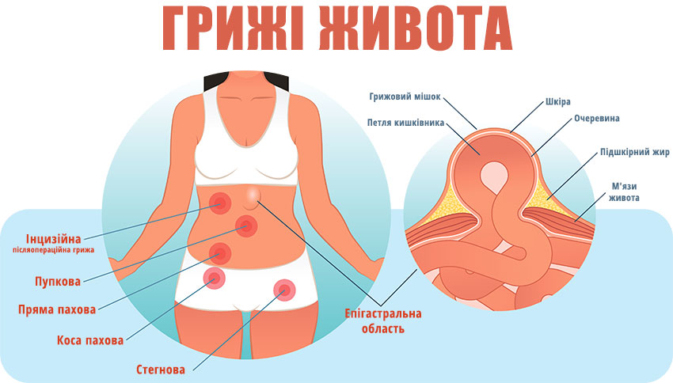

Грижа
Гри́жа, також розм. кила́ (лат. hernia) — захворювання, що характеризується випинанням вмісту порожнини крізь природні отвори або дефект черевної стінки разом з усіма її сполучнотканинними шарами.
Етимологія
Слово грижа походить від прасл. *gryža < *gryzja, утвореного від дієслова *gryzti («гризти»). Кила пов'язане з прасл. *kyla — «наріст на тілі», «ґуля», «пухлина».
Загальні ознаки та термінологія
Грижі діагностуються у різних ділянках тіла людини. Однак найчастіше мова йде про грижі передньої черевної стінки. Кила або вихід внутрішніх органів чи тканин разом із пристінковим листком очеревини через дефект у м'язово-апоневротичному шарі черевної стінки під шкіру. Вихід під шкіру внутрішніх органів чи тканин, непокритих пристінковим листком очеревини, називається підшкірною евентрацією, а вихід внутрішніх органів чи тканин назовні через дефект у всіх шарах черевної стінки (через рану) — випадінням. Краї дефекту у м'язово-апоневротичному шарі черевної стінки класифікуються як ворота грижі. Пристінковий листок очеревини, що вкриває внутрішні органи чи тканини, називають грижовим мішком, вміст мішка — грижовим вмістом.
Класифікація
За відношенням до шкірних покривів:
- внутрішні (2 %)
- зовнішні(98 %)
За вправимістю:
- вправимі
- невправимі
За защемленістю:
- защемлені
- не защемлені
За етіологічними ознаками:
- вроджені
- набуті
За локалізацією в тілі:
- Спинномозкові (міжхребцеві (грижі дисків), «грижі» головного мозку)
- Черевної порожнини (пахові, пупкові, пахово-калиткові, передньої черевної стінки (посттравматичні, післяопераційні), білої лінії живота, стегнові, діафрагмальні, сідничні, промежинні)
Грижа стегнова
Грижеві ворота — стегновий канал, нутрощі виходять всередину від стегнових суглобів нижче пупартової зв'язки. Зустрічається частіше в жінок.
Людина скаржиться на біль та наявність невеликої пухлини у пахвинній складці. При огляді відмічається невелике випинання (з лісовий горіх, рідко з куряче яйце) овальної форми, розташоване під пупартовою зв'язкою. На дотик випинання м'якої або еластичної консистенції, при защемленні або невправимості — не зміщується в сторони.
Грижа білої лінії
Грижеві ворота — щілини між сухожилковими волокнами, що утворюють білу лінію живота. Грижевий вміст на початковій стадії — передчеревна жирова клітковина, надалі — тканина пупково-печінкової зв'язки, сальник.
Грижа пахвинна
Грижеві ворота — пахвинний канал. Вирізняють косу та пряму пахвинну грижу.
Грижа пупкова
Грижові ворота — пупкове кільце. При пальпації палець відчуває краї пупкового кільця, а грижове випинання легко вправляється у черевну порожнину.
Грижа післяопераційна
Грижеві ворота — краї операційного розрізу черевної стінки, що розійшлися. Випинання у області операційного рубця різної форми.
Лікування
Лікуються хірургічним методом, виконується герніопластика, при велетенських грижах передньої черевної стінки абдомінопластика.
Зараз набуває популярності:
- герніопластика з використанням синтетичної сітки (поліестерова, поліпропіленова політетрафторетіленова)
- лапароскопічна герніопластика
- лапароскопічна герніопластика із застосуванням сітки